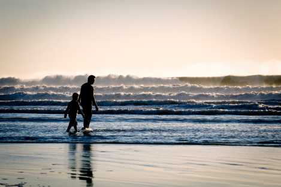

You can earn enough miles
to book the right flight
LET’S GET STARTED
Dads do a lot. They drive us around, they comfort us when we’re sad, they teach us all sorts of cool skills and activities. These are just a few of the many reasons why we should give them what they want on Father’s Day. But where should you go on your family trip? There are so many possibilities. That’s why RewardExpert set out to determine the best U.S. travel destinations to visit with your dear old dad this year.
We compared 100 cities and destinations in the United States and evaluated them on 17 key “dad-factor” indicators across four dimensions: , , , and . Using this data we determined a full ranking of the best destinations for dads in the country.
The top five overall best cities for dads will come as no surprise. However, we know that not all dads are created equal. They have different interests and hobbies. Some are big on playing sports, some are big on napping, and some are all about chucking back a cold one at the end of the day. Whatever your dad is into, we’ve compiled destinations that best suit all sorts of dads.
Armed with this ranking we’re hoping our results help you figure out the best travel destination for your Dad.
Best Cities By Dad-Type
For the Scholarly Dad
Some Dads just love cracking the books. These are the kinda dads you have to tell not to do your homework! They can answer all your questions about the Civil War or constantly have their nose in some book about supernovas. On vacations, they know all the museums and what time they’re free. The cities on this list will be sure to keep dad happy and engaged while on vacation.
This list includes total museums per capita, science museums per capita, history museums per capita, and specialty museums per capita.
1
Washington D.C.
D.C. is first on our list of best cities for geeky dads. Absolutely no surprise here. Furthermore, there are 19 specialty museums in the city, which is far more than any other destination we analyzed. We have a feeling it might take multiple visits for Dad to see everything. Check out the International Spy Museum, which is sure to be a blast.
2
Philadelphia PA
Second on our list is Philadelphia. The country’s Constitution was written in this very city, which clearly makes it an amazing city for Dad’s who love the country’s history. Philly also scored well in the sheer amount of museums they have in the city. There are a 131 museums to choose from in Philadelphia. Check out the Franklin Institute, an amazing center for science. At the end of May, the institute is opening a Mirror Maze exhibit. It’ll explore how numbers naturally occur in nature.
3
Richmond VA
Richmond is third on our list of best cities for bookworm Dads. For it’s size, Richmond has many museums per capita. For every 100,000 residents, there are over 30 museums, which is remarkable considering the size of the city. Take your Dad to the Federal Reserve Money Museum. He’s always talking about maintaining a budget, so he will surely enjoy this museum.
4
Chicago IL
Chicago is fourth on our list. The Windy City scored consistently well across all the categories we analyzed. Chicago has over 115 museums, over 40 history museums, and four science and specialty museums. A trip to Chicago without going to the Art Institute is about as incomplete as skipping a slice of deep-dish pizza. However, don’t forget to check out the Museum of Science and Industry. He’ll talk about it for years.
5
New York NY
The Big Apple comes out fifth on our list of best cities for Dads with pocket protectors. New York has it all and it certainly doesn’t skimp on history, science, and art. The quality the city has to offer is some of the best in the world, and it cannot be denied. As expected, NYC scored well in in all categories. According to our findings, there are almost 170 museums in NYC, which is more than any other city we analyzed. Check out the dinosaur skeletons at The Museum of Natural History or look overboard at The Intrepid Sea, Air, & Space Museum.
Houston TX
For our bonus pick, we’d like give a shout out to Houston, Texas. If science is your dad's thing, then you must visit Houston. Houston had the most science museums of any city we analyzed with eight total museums. Visit the Health Museum, where you take a larger-than-life tour through the entire human body. They dissect different organs each month. It’s equal parts gross and cool. Dad will be sure to love it.
For the Party Dad
Dad, the line to the club starts over here! Some Dads love to party, and we didn’t forget about them. Everyone needs a break from being responsible all the time right? Even Dads.
Some cities are world renowned for their nightlife. You just have to know where to go. This list includes comedy clubs, breweries, pool halls, casinos, and music venues.
1
New York NY
No surprise here: New York City ranks first on our list of best cities for nightlife. It’s the city that never sleeps. What do you think it’s doing if not sleeping? It’s partying. NYC scored well in all categories. It has over over 250 music venues and with 20 comedy clubs, it has more than any other city. It has 50-plus breweries and brewpubs. All this makes NYC a never ending party. Check out the Upright Citizen Brigade Theater for laughs or the Music Hall of Williamsburg for tunes. Don’t forget about Brooklyn Brewery, too!
2
Chicago IL
Chicago knows how to party. It is second on our list of best cities for Dad’s looking to get their groove on. Chicago scored incredibly well in regard to music venues, comedy theaters, and breweries. There are 84 breweries and brewpubs in the Windy City, which is third of all the cities we analyzed. Also, improv comedy started in Chicago, so there’s no shortage of places to see rising stars perform. We recommend the Improv Olympic for comedy or Green Mill for jazz.
3
Denver CO
Party it up in Denver Colorado! Due to its wide variety of music venues, pool halls, and breweries, the mile high city is third on our list of the best cities for party-seeking dads. Did we mention breweries? We better mention it again, because the surge in craft beers practically originated in Denver. According to our data, Denver has 97 breweries and brewpubs, which is more than any other city we analyzed. Go have a drink at the taprooms of the Denver Beer Company or Epic Brewing Company and catch a concert at Hi-Dive.
4
Los Angeles CA
LA, the City of Angels, is fourth on our list of best cities for Dads looking to party. Los Angeles scored particularly well in comedy clubs, pool halls, and music venues. The city has 17 comedy clubs, over 60 music venues, and 32 pool halls. LA ranked first in regard to pool halls of all the cities we analyzed, so check out LA if your Dad is a pool shark. Go see a concert at the Hollywood Bowl or check out a comedy show at the Comedy Store.
5
Portland OR
Portland is fifth on our list of best cities for Dads who want to rage. Portland has a lot of breweries, music venues, and pool halls, ensuring party dads will have a blast. With 90 breweries and brewpubs, Portland ranks second of all the cities we analyzed in regard to breweries. Also, Portland has 60 music venues, which is remarkable for a city of its size. Dads should check out the beers at the taprooms of Hair of the Dog Brewing Company or Redhook Ale Company.
Austin TX
Our bonus pick for this category is Austin, Texas! Austin is a ridiculously fun city. Furthermore, it’s one of the few cities outside of LA/NYC/Chicago that scored well in comedy. Comedy clubs and theaters are popping up each year, so it’s a wonderful time to check out their scene and possibly enjoy undiscovered talent. With over 50 breweries and over 100 music venues, you really can’t go wrong. Check out Mohawk Austin or Austin Beerworks. Finally, you can’t forget those three important letters dads love to hear: B-B-Q. Austin is renowned for its barbeque scene, so meat-loving dads will have a great time.
For the Thrill-Seeking Dad
We all know dads that love adventure. These dads keep a fully stocked supply of camping gear; it’s always ready to go. Their bucket list is long and they seem to cross off its contents all the time. This list is will be a hit for all the adrenaline-junkie dads.
This list includes miles of serious hikes, skydiving opportunities, and number of ski resorts. Refer to this list if you frequently find yourself having to tell your dad to “get down from there!” .
1
Boulder CO
Boulder is first on our list of best cities for adventure. Boulder scored well across all three categories. There are over 130 miles of hikes in the Boulder area, which is an insane amount of miles for a city of its size. Boulder is near many national parks and, according to our data, it’s close to at least seven ski resorts. Also, there are three companies that offer skydiving in the Boulder area so don’t forget to nudge Dad towards taking the plunge, if that’s been on his bucket list. It’s an experience he’ll never forget. Check out the Loveland Ski Area or climb one of the many mountains Colorado has to offer.
2
Denver CO
There must be something magical about Colorado. Denver is second on our list of best cities for thrillseekers. Denver, about 30 miles south of Boulder, scored well across all the categories. Denver sits at the bottom of the Rocky Mountains, so there are many opportunities to hike, ski, and climb. There are over 130 miles of hikes near downtown, which makes the city an amazing opportunity for those looking to get in touch with nature. Denver doesn’t just offer nature though. The city offers breweries, museums, and music too. It’s just an all around wonderful destination for a vacation. Perhaps you could out the first Chipotle, or take a hike through Mills Lake.
3
Breckenbridge CO
While Denver and Boulder are wonderful options, sometimes you want to really, and we mean really, leave the hustle and bustle of the city behind. Breckenridge is the perfect choice for those looking to get away of the city and into the quiet hum of nature. To get there, you must drive through the Rocky Mountains from Denver or Boulder. This drive is considered one of the most beautiful rides in the United States. The city is known for its close proximity to some the world’s best skiing. There are at least eight resorts near Breckenridge. Fret not if you can only go during the summer. Visiting Breckenridge in the summer means you get to experience amazing hiking trails. The ski resorts stay open all year around for those who want to hike and explore the mountains. Ski, hike, or play golf at Copper Mountain or hike through Boreas Pass.
4
Salt Lake City UT
We’re taking a turn southwest from Colorado to Utah! Salt Lake City ranks fourth on our list of the best cities for Dads seeking adventure. Salt Lake City boasts incredible mountain views from the lakeside city. Salt Lake scored well across all of our categories, which is no surprise due to its status as a world renowned skiing destination. There are eight resorts in the area and 39 miles of hikes. We recommend Snowbird, a four season resort that is world famous for its skiing.
5
Boise ID
Boise is often overlooked when people think of U.S. cities to visit for outdoor adventure and we’re not sure why. It ranks fifth on our list because it boasted huge numbers across all three indicators for outdoor adventure. According to our data, Boise has at least ten ski resorts close to the city and over 30 miles of hiking. And for those looking for serious adrenaline, check out DZONE Skydiving.
Anchorage AK
Our bonus pick is Anchorage, Alaska, which cannot be forgotten about when considering U.S. cities for outdoor adventure. Anchorage is an incredible city. The opportunities for adventure there are not for the faint of heart. The city seriously has it all. You can ski, hike, and even climb in one of the most secluded places in the world. According to our findings there’s over 140 miles of hikes in the vicinity the city. Dads should visit Denali National Park, which will without a doubt be an unforgettable experience.
For the Typical Dad

For most of us, our dads are, y’know, Dad. They play golf, they nap, they cheer for the hometeam. We didn’t forget about them, because in a way, we can all relate to this sort
of dad.
This list factors in how many professional sports teams a city has, number of golf courses, beaches, tennis courts, and miles of walking trails.
1
Los Angeles CA
L.A. is first on our list of best cities for the every-dad. Known for its sunny weather, beaches, and walking trails, Los Angeles scored well across all of our categories. There are 618 miles of walking trails in LA, which ranks first of all the cities we analyzed. Hike through Griffith Park to catch amazing views of the Hollywood Sign or root for the Dodgers at Dodger Stadium.
2
San Francisco CA
For some dads, a trip to San Francisco is a wonderful idea, and it’s no surprise that it ranks second on our list. San Fran scored consistently well across all of our indicators, but especially well in regard to miles of walking trails. The city has almost 500 miles of walking trails. Dads should go see the Giants play; but don’t forget take a walk through the beautiful Golden Gate Park.
3
New York NY
New York’s thousands of public services are very underused by those visiting the city. New York has everything, and that includes golf courses, beaches, tennis courts, and a plethora of other public goods. That’s why the Big Apple is third on our list of the best cities for Dads. NYC is has over 700 tennis courts, 15 public beaches, and almost 90 golf courses nearby. Take a trip to Coney Island or a walk through Prospect Park to enjoy the outdoors with dad.
4
The Outer Banks NC
For those Dads looking to relax on the beach, look no further than a trip to North Carolina’s Outer Banks. The Outer Banks rank first in regard to public beaches per capita, which is why it ranks 4th on our list of destinations best for sports and recreation. There are 89 public beaches on the Outer Banks according to our data, which is over 150 beaches per 100,000 residents. When visiting, don’t forget to see the Bodie Lighthouse or the Fort Raleigh Historic Site.
Phoenix AZ
For our bonus pick in this category, Phoenix takes the cake. After compiling the data, we realized Phoenix is a wonderful choice to visit with Dad. Phoenix scored well in professional sports teams, walking trails, and public amenities. Phoenix has over 500 miles of walking trails, 30 golf courses, and four professional sports teams. Furthermore, Phoenix is just a drive from some of the country’s best national parks, including the Grand Canyon. Take a walk through the Desert Botanical Garden or a hike through South Mountain Park. Don’t forget to see a Diamondbacks game at Chase Field.
Overall Top 5 Cities for Dads
96.4Los Angeles, CA
LA is first on our list of the best cities for Dads. The City of Angels scored well in all of our categories: it has beaches, golf courses, museums, culture, and plenty of opportunities to hike, walk, ski, or climb nearby. LA has almost 90 museums, nearly 20 comedy clubs, and over 60 music venues. Even more staggering is the city’s hiking opportunities. According to our data, LA has over 500 miles of hiking and over 600 miles of walking paths. Lastly, Los Angeles has nearly 15 specialty museums, which is greater than any of the cities we analyzed. Go visit the Grammy Museum, take a stroll down Hollywood Boulevard.
93.0New York, NY
New York is second on our list of the best cities for Dads. There’s something in the Big Apple for everybody. NYC scored well in regard to museums, comedy clubs, professional sports teams, breweries, and public amenities. New York has almost 170 museums, at least 20 comedy clubs, over 50 breweries. Furthermore, there’s no city home to more professional sports teams than NYC. Grab a street dog, walk through Central Park, see the Yankees (or the Mets), or sip a drink at the Brooklyn Brewery. Don’t forget to check out the city’s oldest bar: McSorley’s Old Ale House. There’s no doubt; you’ll find whatever your Dad likes in New York.
89.7Denver, CO
Right at the foothills of the Rocky Mountains lies Denver, which is third on our list of the best cities for dads. Denver has a massive amount of breweries, tons of hiking opportunities, and an art & culture scene that shouldn’t be missed. There are nearly 100 breweries in just Denver alone. Furthermore, the city is in the proximity of over 130 miles of hiking routes and over 150 miles of walking trails & paths. Those looking to hit up the slopes won’t be disappointed either. Denver is a world-renowned skiing destination; there are at least seven ski resorts close to the city. Check out the Denver Museum of Nature and Science or the History Colorado Center.
86.2Chicago, IL
Chicago ranks fourth on our list of the best cities for Dads. Chicago scored well across all of our categories and it’s quite clear that any Dad will have a great time there. The windy city has over 30 public beaches! Just hop over to Oak Street Beach if you’re getting hot and tired from walking around the city. There are almost 120 museums in Chicago, which make it a wonderful destination for the history or science nerd. Take a boat ride down the city’s canals while taking a tour of the city’s renowned architecture. Don’t forget to catch a game at Wrigley Field with the Cubs.
85.4San Francisco, CA
San Francisco is fifth on our list of the best cities for Dads, because it scored well across all of our indicators. San Francisco has nearly 600 miles of hiking trails and 500 miles of walking paths. For Dads who love sports, San Francisco is a must visit since the city has six professional sports teams. Furthermore, San Francisco has over 60 music venues and almost 50 breweries and brewpubs. Take a ferry to Alcatraz Island or take a stroll down the scenic Pier 39.
Overall Ranking
| # | City & State | Score | Education | Nightlife | Outdoor Adventure | Sports & Adventure |
|---|---|---|---|---|---|---|
| 1 | Los Angeles, CA | 96.4 |
7 | 4 | 3 | 1 |
| 2 | New York, NY | 93.0 |
5 | 1 | 98 | 3 |
| 3 | Denver, CO | 89.7 |
24 | 3 | 2 | 11 |
| 4 | Chicago, IL | 86.2 |
4 | 2 | 44 | 9 |
| 5 | San Francisco, CA | 85.4 |
14 | 12 | 6 | 2 |
| 6 | Seattle, WA | 82.2 |
11 | 8 | 15 | 37 |
| 7 | Minneapolis, MN | 81.2 |
43 | 9 | 19 | 5 |
| 8 | Washington, D.C | 81.0 |
1 | 33 | 32 | 18 |
| 9 | Portland, OR | 76.9 |
56 | 5 | 17 | 42 |
| 10 | Boston, MA | 73.3 |
13 | 17 | 42 | 6 |
| 11 | San Diego, CA | 72.1 |
23 | 6 | 38 | 35 |
| 12 | Atlanta, GA | 71.5 |
26 | 11 | 35 | 16 |
| 13 | Houston, TX | 71.2 |
8 | 19 | 40 | 21 |
| 14 | Austin, TX | 71.2 |
12 | 7 | 31 | 59 |
| 15 | Phoenix, AZ | 69.2 |
33 | 21 | 26 | 7 |
| 16 | Sacramento, CA | 69.0 |
31 | 15 | 14 | 48 |
| 17 | Miami, FL | 68.3 |
40 | 23 | 23 | 8 |
| 18 | Indianapolis, IN | 68.2 |
10 | 14 | 68 | 28 |
| 19 | Las Vegas, NV | 67.8 |
47 | 10 | 34 | 25 |
| 20 | Philadelphia, PA | 67.7 |
2 | 25 | 83 | 24 |
| 21 | St. Louis, MO | 67.1 |
18 | 18 | 58 | 12 |
| 22 | Dallas, TX | 66.8 |
20 | 36 | 28 | 13 |
| 23 | Baltiomore, MD | 66.4 |
6 | 41 | 41 | 39 |
| 24 | Salt Lake City, UT | 65.3 |
28 | 48 | 5 | 40 |
| 25 | Pittsburg, PA | 64.7 |
15 | 42 | 56 | 10 |
| 26 | Richmond, VA | 63.1 |
3 | 55 | 62 | 58 |
| 27 | Boulder, CO | 62.6 |
87 | 16 | 1 | 60 |
| 28 | Boise, ID | 62.2 |
68 | 43 | 8 | 49 |
| 29 | Tucson, AZ | 61.6 |
34 | 31 | 27 | 23 |
| 30 | Detroit, MI | 60.2 |
48 | 72 | 21 | 19 |
| 31 | Breckenridge, CO | 60.2 |
83 | 29 | 4 | 31 |
| 32 | Tampa, FL | 59.1 |
27 | 34 | 71 | 17 |
| 33 | Asheville, NC | 58.2 |
39 | 13 | 29 | 87 |
| 34 | Colorado Springs, CO | 53.2 |
35 | 27 | 22 | 54 |
| 35 | Albuqerque, NM | 52.4 |
16 | 32 | 36 | 57 |
| 36 | Saint Paul, MN | 52.3 |
21 | 59 | 18 | 66 |
| 37 | San Antonio, TX | 52.1 |
19 | 51 | 33 | 46 |
| 38 | San Jose, CA | 51.7 |
59 | 58 | 11 | 61 |
| 39 | Charlotte, NC | 51.6 |
63 | 40 | 30 | 33 |
| 40 | Anchorage, AK | 51.2 |
52 | 62 | 9 | 63 |
| 41 | Napa, CA | 50.3 |
71 | 46 | 10 | 89 |
| 42 | Orlando, FL | 49.6 |
69 | 68 | 24 | 30 |
| 43 | Milwaukee, WI | 48.6 |
29 | 35 | 75 | 36 |
| 44 | Cincinati, OH | 48.6 |
82 | 22 | 46 | 14 |
| 45 | Saint Augustine, FL | 48.1 |
9 | 64 | 81 | 45 |
| 46 | Columbus, OH | 47.6 |
38 | 39 | 51 | 50 |
| 47 | Nashville, TN | 47.4 |
72 | 20 | 63 | 41 |
| 48 | Santa Barbara, CA | 47.3 |
46 | 60 | 20 | 75 |
| 49 | Cleveland, OH | 47.3 |
36 | 37 | 85 | 20 |
| 50 | Raleigh, NC | 45.3 |
58 | 50 | 53 | 38 |
| 51 | Jacksonville, FL | 44.8 |
37 | 57 | 61 | 44 |
| 52 | Buffalo, NY | 44.0 |
54 | 61 | 76 | 26 |
| 53 | Reno, NV | 43.9 |
88 | 24 | 12 | 80 |
| 54 | Burlington, VT | 43.5 |
41 | 28 | 39 | 97 |
| 55 | Glacier National Park, MT | 43.4 |
99 | 99 | 7 | 15 |
| 56 | Louisville, KY | 43.1 |
45 | 47 | 60 | 52 |
| 57 | Santa Fe, NM | 41.9 |
77 | 79 | 16 | 65 |
| 58 | Kansas City, MO | 41.8 |
79 | 38 | 47 | 32 |
| 59 | Virginia Beach, VA | 41.0 |
30 | 87 | 66 | 51 |
| 60 | Memphis, TN | 40.9 |
67 | 69 | 45 | 55 |
| 61 | Tulsa, OK | 40.7 |
42 | 73 | 49 | 70 |
| 62 | Sedona, AZ | 40.5 |
95 | 63 | 25 | 27 |
| 63 | Ann Arbor, MI | 40.3 |
61 | 54 | 43 | 76 |
| 64 | Key West, FL | 40.0 |
17 | 76 | 73 | 79 |
| 65 | Eugene, OR | 38.6 |
65 | 56 | 52 | 84 |
| 66 | Savannah, GA | 38.4 |
25 | 66 | 80 | 64 |
| 67 | Oklahoma City, OK | 38.1 |
22 | 67 | 84 | 53 |
| 68 | Omaha, NE | 38.1 |
60 | 30 | 97 | 47 |
| 69 | Honolulu, HI | 37.6 |
50 | 77 | 48 | 90 |
| 70 | New Orleans, LA | 37.3 |
80 | 26 | 78 | 34 |
| 71 | Des Moines, IA | 36.7 |
74 | 75 | 37 | 85 |
| 72 | Green Bay, WI | 36.4 |
70 | 85 | 89 | 29 |
| 73 | Wichita, KS | 36.2 |
64 | 44 | 77 | 71 |
| 74 | El Paso, TX | 35.7 |
53 | 89 | 55 | 68 |
| 75 | Chapel Hill, NC | 35.7 |
51 | 84 | 64 | 78 |
| 76 | Provincetown, MA | 35.6 |
78 | 49 | 96 | 22 |
| 77 | Santa Clara, CA | 35.5 |
89 | 94 | 13 | 72 |
| 78 | Syracuse, NY | 35.4 |
57 | 74 | 65 | 86 |
| 79 | Little Rock, AR | 35.2 |
73 | 65 | 69 | 81 |
| 80 | Athens, GA | 33.4 |
66 | 86 | 59 | 92 |
| 81 | Niagara Falls, NY | 32.9 |
49 | 98 | 50 | 94 |
| 82 | Corpus Christi, TX | 32.3 |
62 | 81 | 79 | 73 |
| 83 | Fort Lauderdale, FL | 31.5 |
32 | 83 | 88 | 91 |
| 84 | The Outer Banks, NC | 31.3 |
97 | 97 | 91 | 4 |
| 85 | Norfolk, VA | 31.0 |
44 | 90 | 86 | 62 |
| 86 | Boca Raton, FL | 30.9 |
75 | 91 | 90 | 43 |
| 87 | Lexington, KY | 29.3 |
81 | 70 | 67 | 69 |
| 88 | Grand Rapids, MI | 29.3 |
90 | 45 | 54 | 82 |
| 89 | Baton Rouge, LA | 29.0 |
55 | 82 | 99 | 67 |
| 90 | Madison, WI | 28.2 |
84 | 52 | 82 | 56 |
| 91 | Chesapeake, VA | 28.2 |
76 | 96 | 70 | 95 |
| 92 | Duluth, MN | 27.9 |
91 | 53 | 57 | 83 |
| 93 | St. Petersburg, FL | 22.1 |
94 | 88 | 72 | 88 |
| 94 | Big Sur, CA | 20.9 |
98 | 78 | 74 | 99 |
| 95 | Providence, RI | 20.3 |
86 | 71 | 87 | 96 |
| 96 | Kennebunkport, ME | 19.4 |
96 | 80 | 95 | 77 |
| 97 | Newport, RI | 19.1 |
85 | 92 | 94 | 74 |
| 98 | Falmouth, MA | 15.5 |
92 | 95 | 93 | 93 |
| 99 | Atlantic City, NJ | 15.2 |
93 | 93 | 92 | 98 |
Show the full ranking
Methodology
To help travelers discover which U.S. cities are the best to visit with their dads in 2017, RewardExpert analysts compared 100 major destinations across four key dimensions: 1) Educational Opportunities, 2) Nightlife, 3) Outdoor Adventure, and 4) Sports & Recreation.
We first identified 17 relevant metrics, which are listed below with their corresponding weights. Each metric was given a value between 0 and 100, wherein 100 represents the most favorable conditions for travel and 0 the least.
Finally, we calculated the overall score for each city using the weighted average across all metrics and ranked the cities accordingly.
Indicators
Night life
- Number of Breweries and Brewpubs
- Number of Music Venues
- Number of Pool Halls
- Number of Comedy Clubs
- Number of Casinos
Outdoor Adventure
- Miles of Hiking
- Number of Skydiving Companies
- Number of Ski Resorts
Education
- Number of Total Museums
- Number of Science Museums
- Number of History Museums
- Number of Specialty Museums
Sports & Recreation
- Number of Golf Courses
- Number of Professional Sports Teams
- Number of Public Beaches
- Number of Public Tennis Courts
- Miles of Walking Trails
Sources: Trust For the Public Land, CasinoCity.com, Dropzone.com, Golflink.com, Dead-Frog.com, Ski Central, MuseumsUSA, easypooltutor.com, Brewers Association, hikingproject.com, indieonthemove.com, MLB, NFL, NHL, NBA.